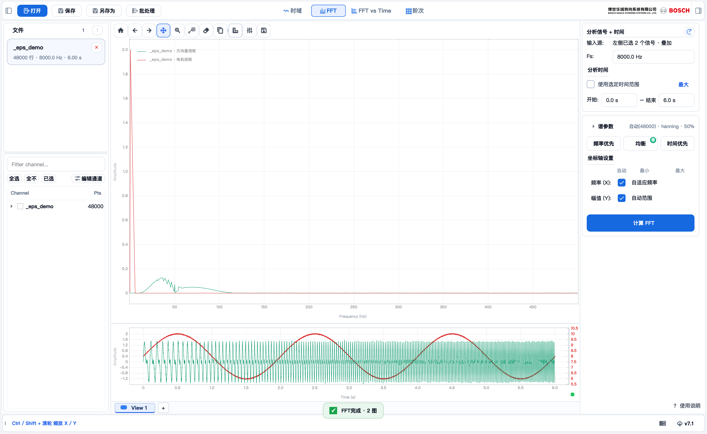

TraceLab v7.9.8
频谱 / FFT
频谱 / FFT
操作指南 · FFT
FFT
看信号的频率成分 —— 两个入口：多通道叠加 或 单通道。
先认准位置 · 在哪点什么

1
2
3
4
5
6
1
顶部 · 切到「FFT」
2
左侧 · 勾通道 （多通道叠加入口）
3
右栏 · 输入行 （已选 N 个 / 单信号）
4
右栏 · 谱参数 （窗 / NFFT / 平均）
5
右栏下 · 计算 FFT
6
中间 · 频谱曲线
02 · 两个入口
A · B
多通道叠加 还是 单通道
A
多通道叠加 —— 左侧勾多个通道 → 右栏显示 左侧已选 N 个 · 叠加（单信号下拉自动隐藏）→ 点计算 FFT → 多条频谱叠在一张图。
看几个信号的频率成分对比、找共同谐波。
B
单通道 —— 左侧全不勾 → 右栏信号下拉重新出现 → 选一个 → 点计算 FFT → 单条频谱。
精细诊断单个信号（配合参数细调）。
一句话区分：左侧有勾选 → 走 A（叠加）；左侧清空 → 右栏下拉出现，走 B（单通道）。
03 · 谱参数
03
右栏挑预设，按需细调
▸
内置 频率 / 均衡 / 时间；要保留自己的组合，点 自定义。
▸
细调 窗函数 / NFFT / 重叠 / 平均模式；幅值可切 dB。
谱参数右栏中部
频率均衡时间自定义
窗函数hanning ▾
FFT点数自动 ▾
重叠50 %
幅值dB ▾
04 · 计算 + 读图
④
点计算 FFT → 出频谱图。
⑤
用工具栏的游标关 / 单游标 / 双游标在峰值上读频率 / 幅值；双游标会显示 fA、fB 和 Δf。
💡
多通道为叠加显示（按颜色区分），共享频率轴。
Frequency (Hz)● 方向盘扭矩 ● 电机扭矩
+ · 频率加权 / A 计权
+
分析声音 · 开 A 计权
①
右侧面板找到 频率加权，默认是 无。
②
分析声音类信号时切到 A 计权：按人耳听感对各频段加权（IEC 61672 标准），更贴近主观响度。
▸
打开音视频文件时，软件会自动把加权预设成 A，你也可以手动改回无。
▸
这是相对加权（看各频段相对强弱），不是绝对声压级 dB。
频率加权右侧
无A 计权
低频和极高频被压低，中频保留——这就是 A 计权曲线。